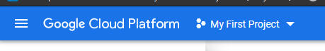
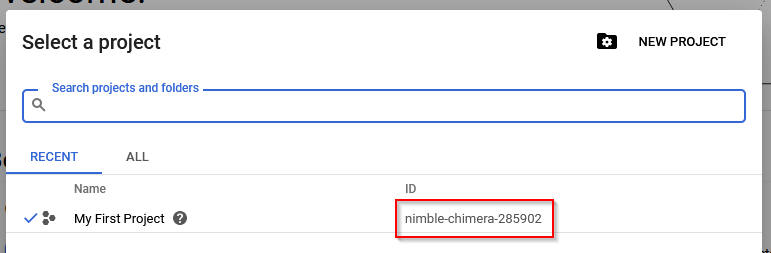
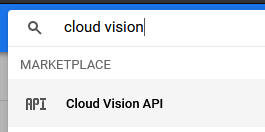
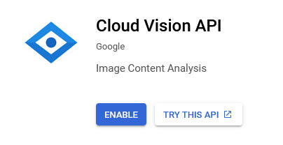
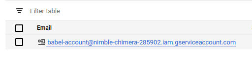
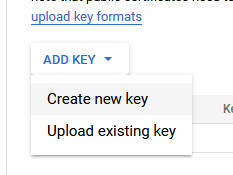
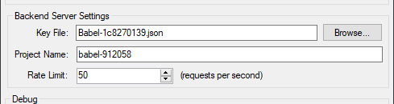

This has been restated over and over in this documentation and in the program, but it cannot be stressed enough: This is a paid product, and you need to be careful about any service that you put your credit card into.
Babel is only an interface to Google Cloud Services. We have no control over how Google Cloud functions, it could break in ways we can't predict, and above all else we cannot do anything about what they charge.
This is a paid service which you may, possibly, be able to use without paying anything, if you are careful about how you use it. However, that is a guess based on Google's documentation, and Babel's developers are not responsible if this speculation doesn't work. It is your responsibility to monitor your own account usage and see how you're being billed.
We are doing nothing but restating Google's own documentation and the text of their own software. In return for a more-or-less free translation program, you are taking on the burden of learning on your own about how the underlying service works and finding out if it's safe to use for your purposes.
Babel requires a Google Cloud Services account and an API key to use. You will need to register an account, activate two services, and generate a keyfile in order to use Babel. This document will give you the rough steps for how to do this.
If you miss a step or if something changes, Google will generally return an error that Babel will show you which will explain how to fix the problem.
Let's begin!
Go to cloud.google.com, click the "get started" link, and log in with your Google account.
As part of this process, you will have to put in a valid credit card. Google may initially tell you that you won't be billed, but that's only for the first year, after which you'll need to enable billing on your account.
At this point you should be logged in to the Google Cloud dashboard.

When you first log in, Cloud creates a project called "My First Project." You can use this if you want, it'll work fine.
Click on the arrow next to the name to see the project list:

You could create a new project if you want from here, or just use the default one.
You'll notice the ID field is highlighted here. That's the "Project Name" that you'll need later. If you make a new project, make sure you find this ID and make a note of it. You can close this window now.
You need to enable two APIs, Cloud Vision and Cloud Translation. The easiest way to do this is to type their names in the search field at the top:

Click on the API result and you should see this page:

Click the Enable button. Repeat for the second API.
Now you need to create a Service Account, which will be used to authenticate Babel. To do this, go to the menu in the upper left, select IAM & Admin, and then Service Accounts:
From here, click Add Service Account:
Put in whatever you like for the name and click Create.
Now you need to specify the Roles to be assigned. Select Cloud Translation API User as shown above, then click Add Another Role and select Cloud Vision API User.
Click Done on the next page. You should then see your new account:

Click on the name of the account, then Add New Key, and then Create New Key:

Pick JSON in the popup. This will download a file. This is your JSON keyfile. Put it in your Babel folder.
This absolutely cannot be stressed enough: This file will give a hacker access to use your account to make translation and OCR requests. Google will not put a cap on how many they can make. Guard this file with your life, as if it were the password to your bank account. Delete it if you aren't going to use the program for a while, and make a new one when you need it again.

Open Babel, go to the Settings, and configure as above. Use the Browse button to select the keyfile you saved, and put the Project Name in the appropriate field.
Click OK, and you're ready to use Babel!
{kind=link}
{kind=link}
{kind=link}